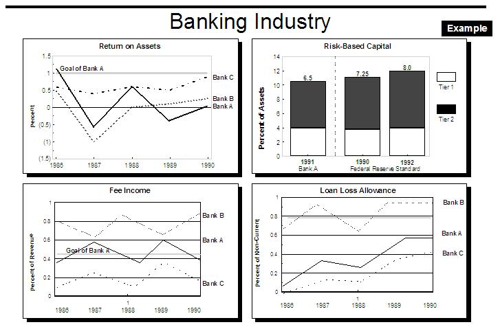
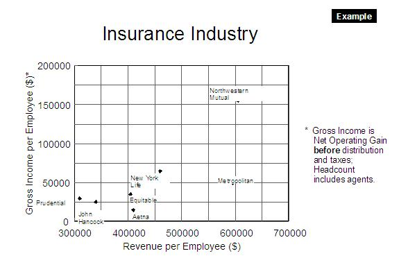
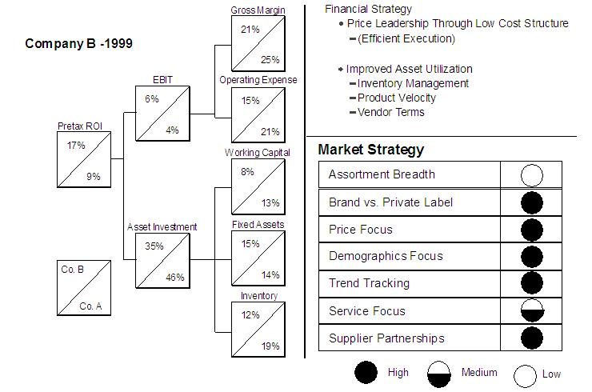
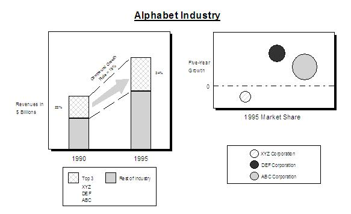

| Example: Financial Benchmarks |
 |
|
| Related Elements |
|---|
For every client and its competitors, the team needs to compute a set of generic and industry-specific ratios during the proposal or initialization phases. These ratios should be used in at least three critical ways: 1) to Analyze Trends, 2) to Assess competitiveness and 3) to provide the basis for preliminary problem diagnosis and engagement planning. Data for these analyses are generally available from public sources like SEC 10-K/10-Q filings, industry associations, and 3rd party databases.
Further insights and explanations can often be gained from reviewing the trade press and interviewing client executives
and industry experts.
This Trend Chart illustrates the benchmarking of our client (Bank A) versus its competitors on four different banking industry ratios:
 The second chart compares Bank A's risk-based capital to the standards set for the industry by the Federal Reserve. It indicates that Bank A has been more cautious than the Federal Reserve standard. The team should inquire as to the rationale for this “prudence,” as it may be related to the relatively poor ROA. Bank A's "fee income" has been consistently in the middle of the pack over the five-year period. The team would probably see this as indicating an area with few urgent problems. Similarly, its loan loss ratio has expanded along with its peers. While this may not indicate a problem specifically for Bank A, the team should determine whether the whole industry is experiencing a serious loan-loss problem that could represent a threat or opportunity for Bank A.
 This can powerfully illustrate competitive advantages or problems. For example, we see in this example that Northwestern Mutual is far ahead its peer group in terms of employee productivity. Moreover, we see that, not only are it's agents far more effective in generating revenue, but that it has a clear operating efficiency advantage when compared to Metropolitan (the other strong revenue generator).
If our client was John Hancock, we could interpret this to mean that “we should not only focus on learning how
Northwestern generates higher revenues per employee but how it sustains its gross income per employee advantage
relative to the whole industry.”
 Both of these companies are large US discount retail chains. All of the financial data was taken from SEC filings. As you can see the Pre-Tax ROI of Company B is nearly twice that of Company A; an enormous competitive gap in such a mature industry. As this presentation reveals, part of the ROI advantage comes from B's strong EBIT. Looking further to the right, we see that B actually has lower gross margins than A (indicating lower selling prices or higher purchasing costs). However, this is more than made up for by B's dramatically lower operating expenses. This analysis directs us to explore hypotheses about the source of this operating cost advantage and ways to close the gap. A quick look at B's operating strategy shows "Low Assortment Breadth," "High Emphasis on Supplier Partnerships" and "High Priority on Demographic Focus". This means B likely emphasizes supply chain management to reduce costs and product mix simplification to minimize the cost of complexity. The other source of B's extraordinary ROI is its low asset investment as a % of sales. If we look at the three classes of assets, we see that B actually has a higher % of sales invested in fixed assets, like stores and distribution centers, than does A. However, both inventory and working capital are substantially lower for B. This leads us back to an examination of B's supply chain management approach as documented in the trade press and elsewhere.
 In addition to highlighting specific competitive characteristics of industry participants, Financial Benchmarks can often tell us how the industry structure is changing. For example, these two Trend Charts describe the fictional "Alphabet Industry." The chart on the left shows that the industry is both growing and heading for consolidation. Because of overall industry growth, the smaller competitors may still be making acceptable returns. However, the smaller players are falling behind the larger firms. This implies that when growth slows, the “big three” are likely to squeeze the smaller firms out using whatever advantage has enabled hem to grow more rapidly than the rest. The chart on the right paints an even more ominous picture: even among the top three firms, XYZ is experiencing negative growth. DEF and ABC seem to be setting themselves us to be a duopoly. How this plays itself out (and how our client should respond) depends on the underlying economics of the industry. |
| © Copyright IBM Corp. 1987, 2012 All Rights Reserved Property of IBM These materials are intended only for use as part of an IBM engagement |